NEWS
JOIN - 이준영 학생, 석사과정(학석연계과정) 입학
이준영 학생이 학부 졸업 후, 석사과정(학석연계과정)으로 입학하였습니다!!
GRADUATION - 이영은 학생, 석사 졸업, 이준영 학생, 학부 졸업
이영은 학생이 2026년 8월 석사과정을 성공적으로 마치고 졸업하였습니다. 이준영 학생도 학부과정을 훌륭히 마치고 졸업하였습니다!! 두 학생의 졸업을 진심으로 축하드립니다!!
EMPLOYMENT - 이영은 학생, 대우건설 입사
이영은 학생이 대우건설에 입사하게 되었습니다!! 축하드립니다!!
JOIN - 임재현 학생, 학부연구생으로 참여
임재현 학생이 학부연구생으로 참여하게 되었습니다. 환영합니다!!
CONFERENCE - 2026년도 봄 한국콘크리트학회 학술대회 참가
2026년 5월 6일 - 5월 8일 창원컨벤션센터(CECO)에서 개최된 2026년도 봄 한국콘크리트학회 학술대회에 이승정 교수, 이영은, 정동섭, 이준영, 정승현 학생이 참가하였습니다. 이영은 학생은 "시멘트 기반 구조용 커패시터 개발" 논문을 발표하였고, 정동섭 학생은 "이방성 응력이 계측 가능한 전도성 나노소재를 혼입한 시멘트 실험체에 대한 실험적 연구" 논문을 발표하였습니다. 또한 경성대 문도영 교수님 연구실, 전북대 ACE Lab 및 고려대 응용구조연구실과 향후 공동연구를 위한 논의 시간을 가졌습니다!
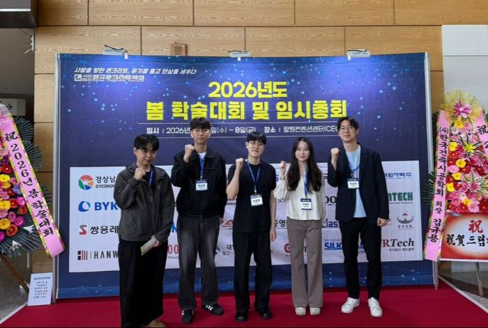
EMPLOYMENT - 성지혜 학생, 태조엔지니어링 입사
성지혜 학생이 태조엔지니어링에 입사하게 되었습니다!! 축하드립니다!!
GRADUATION - 성지혜 학생, 석사 졸업
성지혜 학생이 2026년 2월 석사과정을 성공적으로 마치고 졸업하였습니다. 축하드립니다!!
AWARD - 이승정 교수, 인천대학교 2025-2학기 우수강의 교원 표창 수상
이승정 교수가 인천대학교 2025-2학기 우수강의 교원 표창장을 수상하였습니다.
JOIN - 정승현 학생, 학부연구생으로 참여
정승현 학생이 학부연구생으로 참여하게 되었습니다. 환영합니다!!
GRADUATION - Francis Secret Kadzokoya received a master's degree
Francis Secret Kadzokoya has successfully completed the master's program and received his degree. Congratulations!!
CONSULTING - 인천대학교 가족회사 '(주)한림' 애로기술 컨설팅 완료
이승정 교수가 인천대학교 산학협력단 가족회사 애로기술 컨설팅위원으로 매칭되어 2025년 9월 12일부터 12월 11일까지 (주)한림의 '스탠드형 태양광 LED 안내판 시제품 제작' 관련 기술 컨설팅을 수행하였습니다. 12월 10일에는 (주)한림의 노창근 대표님이 인천대를 방문하여 최종 컨설팅 미팅을 진행하였습니다.
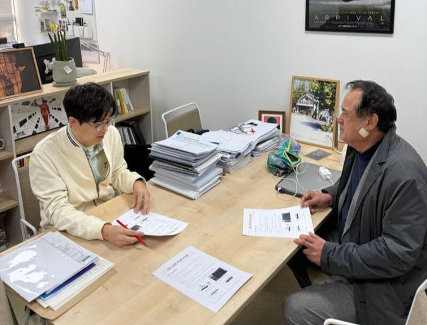
SEMINAR - Georgia Institute of Technology 김진연 박사님 방문
2025년 11월 25일 Georgia Institute of Technology의 김진연 박사님께서 인천대학교를 방문하셔서 "확산초음파를 활용한 콘크리트 균열 깊이 예측 기술"에 대한 세미나를 진행해 주셨으며, 이어서 관련 장비의 사용법과 실험 적용 방법에 대한 상세한 실습 지도를 해주셨습니다!
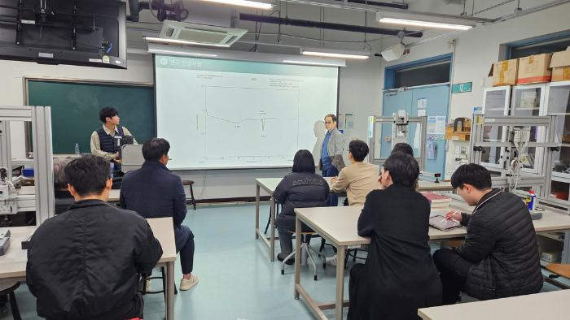
AWARD - 배한준, 이경훈, 이준영, 전규민 학생의 연구팀, 건설환경공학전공 학술제 최우수상 수상
2025년 11월 10일 인천대학교 11호관 208호에서 개최된 2025학년도 건설환경공학전공 학술의 날 학술제에서 배한준, 이경훈, 이준영, 전규민, 윤효대 학생의 구조분야 연구팀이 최우수상을 수상하였습니다!!
구조물경진대회에서는 이승정 교수의 지도를 받은 구조분야 연구팀(김예린, 김나현, 김서진, 신규진, 정현혜, 최건호)이 장려상을 수상하였습니다!
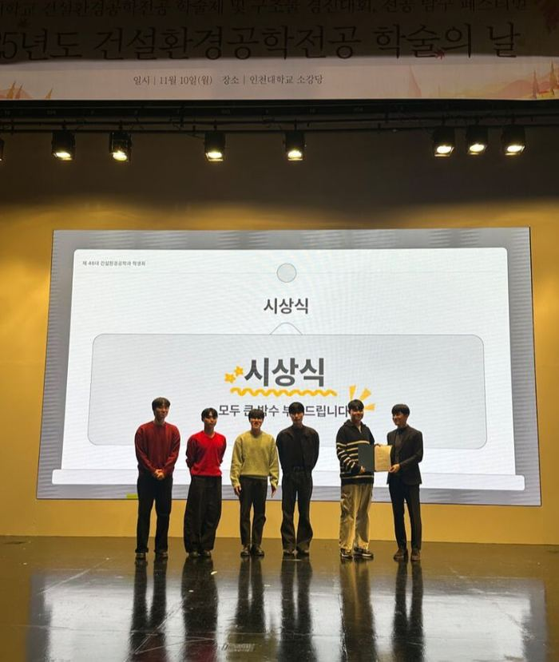
CONFERENCE - 2025년도 가을 한국콘크리트학회 학술대회 참가
2025년 11월 5일 - 11월 7일 여수 엑스포컨벤션센터에서 개최된 2025년도 가을 한국콘크리트학회 학술대회에 이승정 교수, 성지혜, 이영은, 정동섭, Lem Ilagan 학생이 참가하였습니다. 성지혜 학생은 "시멘트 복합재 전기전도도 예측 모델의 하이퍼파라미터 최적화" 논문을 발표하였고, 정동섭 학생은 "다중벽탄소나노튜브를 혼입한 전도성 그라우트의 자가진단 성능에 대한 실험적 연구" 논문을 발표하였고, 이영은 학생은 "전도성 시멘트 복합체 전극을 활용한 에너지 저장 연구" 논문을 발표하였습니다. 또한 전북대 ACE Lab 및 고려대 응용구조연구실과 향후 공동연구를 위한 논의 시간을 가졌습니다!
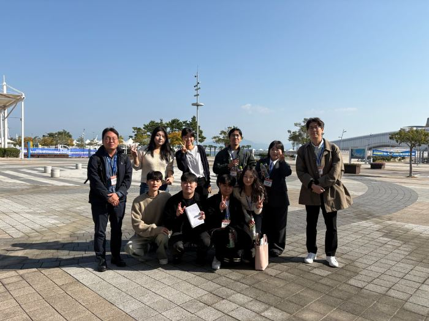
APPOINTMENT - 이승정 교수, 부교수로 승진
2025년 9월 1일자로, 이승정 교수가 인천대학교 도시환경공학부 건설환경공학전공 부교수로 승진하였습니다. 함께 축하해주신 모든 학생 여러분께 깊이 감사드립니다.
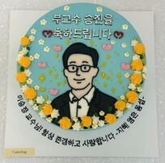
EMPLOYMENT - 전성혁 학생, 선진엔지니어링 입사
전성혁 학생이 선진엔지니어링 플랜트 에너지부에 입사하게 되었습니다!! 축하드립니다!!
TECHNOLOGY TRANSFER - '빗물을 활용한 마찰대전 발전 시스템' 기술, (주)한림에 이전
이승정 교수가 보유하고 있는 '빗물을 활용한 마찰대전 발전 시스템(제10-2760664호)' 기술이 (주)한림에 이전되었습니다. 본 기술이전은 인천대학교 산학협력단과 경희대학교 산학협력단의 공동기술이전으로 진행되었습니다.
BOOK - 'GFRP 보강근 보강 콘크리트구조 설계 지침' 발간
2025년 5월 15일자로 이승정 교수가 집필위원으로 참여한 한국콘크리트학회 콘크리트 실무지침 KCI-PM112.2-25 GFRP 보강근 보강 콘크리트구조 설계 지침이 발간되었습니다. 책 소개는 아래 링크에서 확인할 수 있습니다.
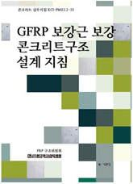
CONFERENCE - 2025년도 봄 한국콘크리트학회 학술대회 참가
2025년 5월 7일 - 5월 9일 제주신화월드에서 개최된 2025년도 봄 한국콘크리트학회 학술대회에 이승정 교수, 성지혜, 이영은, 정동섭 학생이 참가하였습니다. 성지혜 학생은 "전도성 그라우트의 수분 침투 자가 모니터링 분석" 논문을 발표하였고, 이영은 학생은 "마찰대전 나노발전기를 이용한 전도성 시멘트 복합체 에너지 수확 연구" 논문을 발표하였습니다!
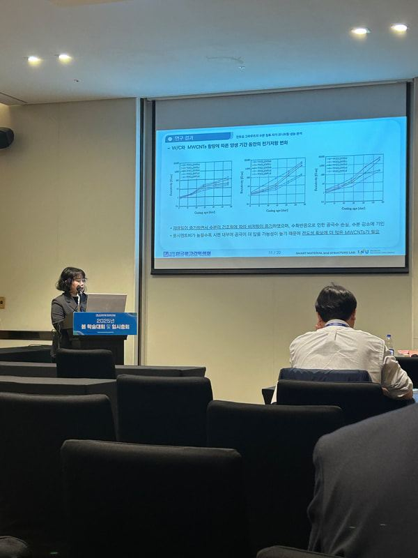
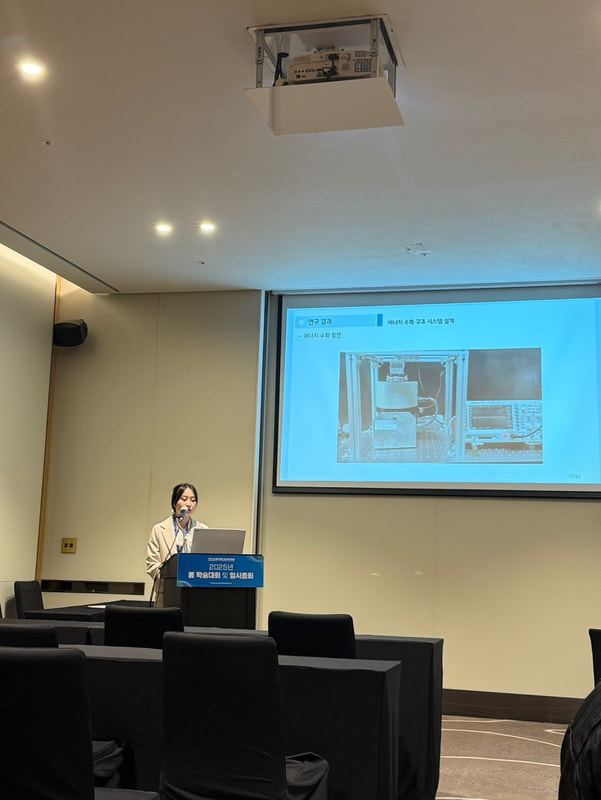
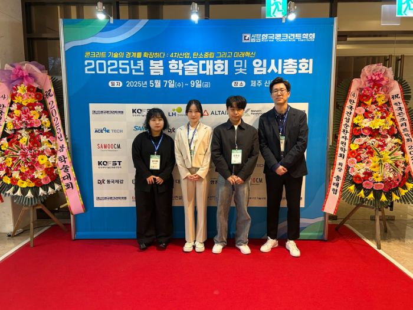
AWARD - 성지혜 학생, 한국복합재료학회 복합재료 우수논문상 수상
성지혜 학생이 2025년도 한국복합재료학회 춘계학술대회에서 복합재료 우수논문상을 수상하였습니다!! 축하드립니다!!
JOIN - 전규민 학생, 학부연구생으로 참여
전규민 학생이 학부연구생으로 참여하게 되었습니다. 환영합니다!!
CONFERENCE - 2025년도 한국복합재료학회 춘계학술대회 참가
2025년 4월 30일 - 5월 2일 제주신화월드에서 개최된 2025년도 한국복합재료학회 춘계학술대회에 성지혜 학생이 참가하였습니다. 성지혜 학생은 "차수용 전도성 그라우트의 최적 자가 진단 시스템 연구" 논문을 발표하였습니다!
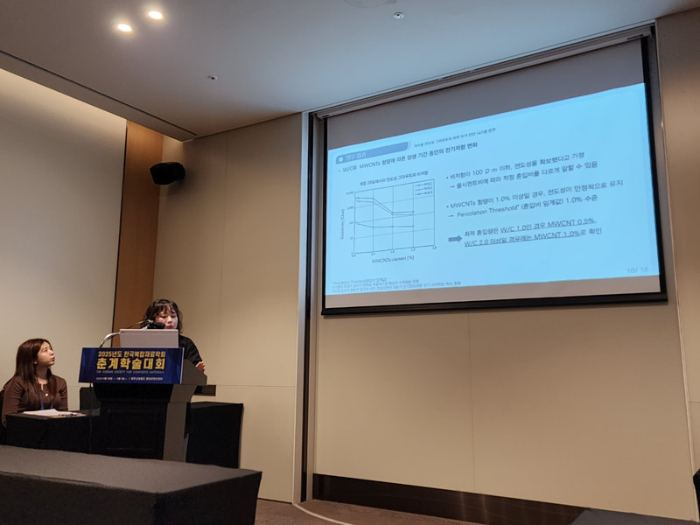
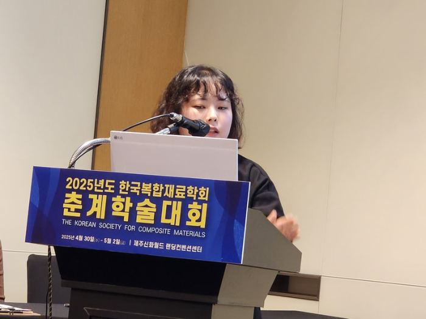
JOIN - 이준영 학생, 학부연구생으로 참여
이준영 학생이 학부연구생으로 참여하게 되었습니다. 환영합니다!!
JOIN - Francis Secret Kadzokoya joins as a master's student
Francis Secret Kadzokoya joins as a master's student through the KOICA-Incheon National University Master's Degree Program. Welcome!!
JOIN - 배한준, 이경훈 학생, 학부연구생으로 참여
배한준, 이경훈 학생이 학부연구생으로 참여하게 되었습니다. 환영합니다!!
JOIN - 정동섭 학생, 석사과정 입학
정동섭 학생이 학부 졸업 후, 석사과정으로 입학하였습니다!!
GRADUATION - 전성혁, 정동섭, 민지원 학생, 학부 졸업
전성혁, 정동섭, 민지원 학생이 2025년 2월 졸업생이 되었습니다!! 축하드립니다!!
EMPLOYMENT - 민지원 학생, SGC 이테크 건설 입사
민지원 학생이 SGC 이테크 건설에 입사하게 되었습니다!! 축하드립니다!!
STANDARD - '유리섬유 강화 폴리머 보강근 콘크리트구조 설계기준' 제정 고시
GRADUATION - Sande Francis Okumu received a master's degree
Sande Francis Okumu has successfully completed the master's program and received his degree. Congratulations!!
CONFERENCE - 2024년도 가을 한국콘크리트학회 학술대회 참가
2024년 11월 6일 - 8일 델피노리조트(설악)에서 개최된 2024년도 가을 콘크리트학회 학술대회에 성지혜, 이영은, 정동섭, 전성혁 학생이 참가하였습니다. 성지혜 학생은 "머신러닝 기반 시멘트 복합체의 전기전도도 예측" 논문을 발표하였습니다!
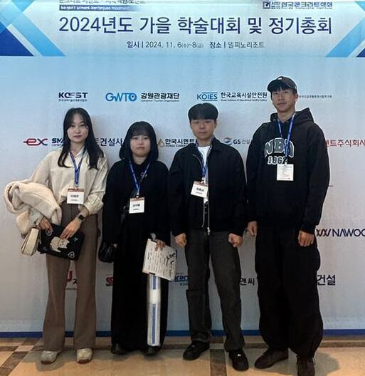
JOIN - 이영은 학생, 석사과정 입학
이영은 학생이 학부 졸업 후, 석사과정으로 입학하였습니다!!
GRADUATION - 이영은 학생, 학부 졸업
이영은 학생이 2024년 8월 졸업생이 되었습니다!! 축하드립니다!!
AWARD - 이영은 학생, 인천대학교 도시과학대학 학장 표창장, 한국콘크리트학회 2024년 학부 우수 졸업생 표창 수상
이영은 학생이 인천대학교 도시과학대학 학장 표창장과 한국콘크리트학회 2024년 학부 우수 졸업생 표창을 수상하였습니다!! 축하드립니다!!
JOIN - 민지원 학생, 학부연구생으로 참여
민지원 학생이 학부연구생으로 참여하게 되었습니다. 환영합니다!!
CONFERENCE - 2024년도 봄 한국콘크리트학회 학술대회 참가
2024년 5월 8일 - 10일 광주김대중컨벤션센터에서 개최된 2024년도 봄 콘크리트학회 학술대회에 이승정 교수, 성지혜, 이영은, 정동섭 학생이 참가하였습니다!!
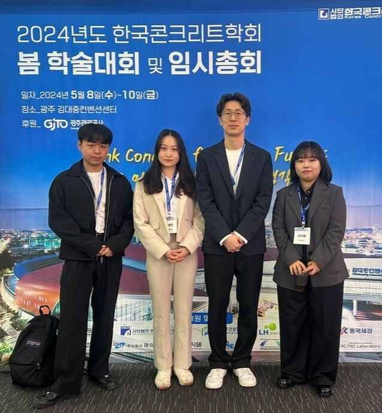
JOIN - Sande Francis Okumu joins as a master's student
Sande Francis Okumu joins as a master's student through the KOICA-Incheon National University Master's Degree Program. Welcome!!
JOIN - 성지혜 학생, 석사과정 입학
성지혜 학생이 학부 졸업 후, 석사과정으로 입학하였습니다!!
GRADUATION - 강윤종, 성지혜 학생, 학부 졸업
강윤종, 성지혜 학생이 2024년 2월 졸업생이 되었습니다!! 축하드립니다!!
AWARD - 성지혜 학생, 한국콘크리트학회 2024년 학부 우수 졸업생 표창 수상
성지혜 학생이 한국콘크리트학회에서 2024년 학부 우수 졸업생 표창을 수상하였습니다!! 축하드립니다!!
AWARD - 이승정 교수, 인천대학교 2023-2학기 대학원 우수강의 교원 포상 대상자 선정
이승정 교수가 인천대학교 2023-2학기 대학원 우수강의 교원 포상 대상자로 선정되었습니다.
AWARD - 스마트 구조 및 재료 연구실, 인천대학교 2023년도 연구소 학생연구단 지원사업 우수팀(3등) 선정
스마트 구조 및 재료 연구실(인천방재연구센터 컨소시엄)이 인천대학교 2023년도 연구소 학생연구단 지원사업의 우수팀(3등)으로 선정되었습니다. 많은 도움을 주신 이헌우 학생(구조진동연구실)에게 감사드립니다!
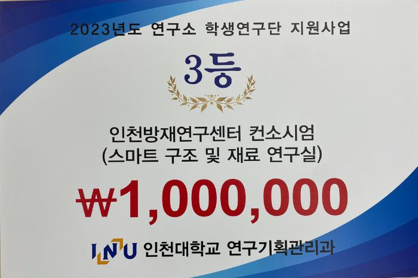
AWARD - 강윤종, 성지혜, 이영은, 전성혁, 정동섭 학생의 연구팀, 도시과학대학 학술제 대상 수상
2023년 11월 8일 인천대학교 대강당에서 개최된 2023학년도 도시과학대학 페스티벌 도시과학대학 학술제에서 구조분야 연구팀(강윤종, 민지원, 성지혜, 이영은, 전성혁, 정동섭, 정아영, 최용선; 지도교수 이승정)이 대상을 수상하였습니다!!
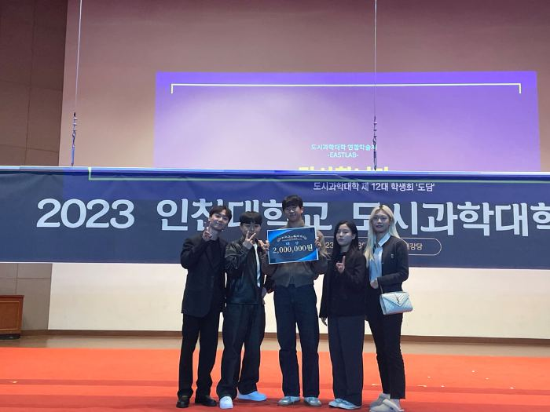
AWARD - 전성혁, 정동섭 학생의 연구팀, 건설환경공학전공 학술제 대상 수상
2023년 10월 30일 인천대학교 대강당에서 개최된 2023학년도 건설환경공학전공 학술의 날 학술제에서 전성혁 학생과 정동섭 학생이 속해있는 구조분야 연구팀(민지원, 장수정, 전성혁, 정동섭, 정아영, 최용선; 지도교수 이승정)이 대상을 수상하였습니다!!
구조물경진대회에서는 이승정 교수의 지도를 받은 구조분야 연구팀(김선호, 손현배, 편도영, 남서현, 김유민)이 대상을 수상하였습니다!!
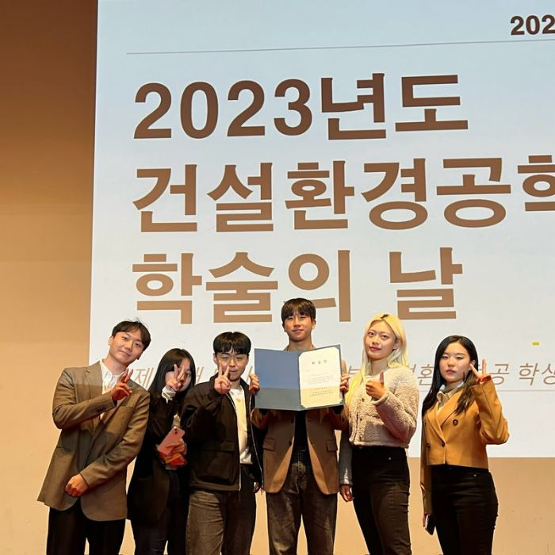
AWARD - 이승정 교수, 인천대학교 2023-1학기 대학원 우수강의 교원 포상 대상자 선정
이승정 교수가 인천대학교 2023-1학기 대학원 우수강의 교원 포상 대상자로 선정되었습니다.
JOIN - 전성혁, 정동섭 학생, 학부연구생으로 참여
SeongHyeok Jeon(전성혁) and Dongsub Jung(정동섭) join as an undergraduate researcher. Welcome!!
AWARD - 이승정 교수, 한국비파괴검사학회 비파괴검사학회지 우수심사위원상 수상
2023년 5월 24일 ~ 26일 부산항국제전시컨벤션센터에서 개최된 2023년 한국비파괴검사학회 춘계학술대회에서 이승정 교수가 비파괴검사학회지 우수심사위원상을 수상하였습니다.
SEMINAR - 제74회 미추홀포럼 개최
2023년 4월 26일(수) 인천대학교 도시과학대학 도시환경공학부 건설환경공학전공의 주최로 제74회 미추홀포럼 -New Topics of Industrial Construction Materials-가 개최되었습니다. ARUOVA LYAZAT BORANBAYEVNA 교수(Eurasian National University; Republic of Kazakhstan)께서 발제자로 참석해주셨으며, 이승정 교수가 연구 중인 건설재료와 관련된 신기술들을 소개하는 시간을 가졌습니다.
미추홀 포럼: 인천대학교 도시과학연구원에서 매년 개최해 오고 있는 정기학술포럼
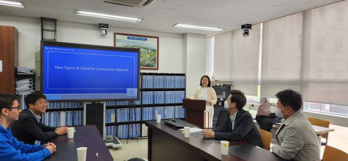
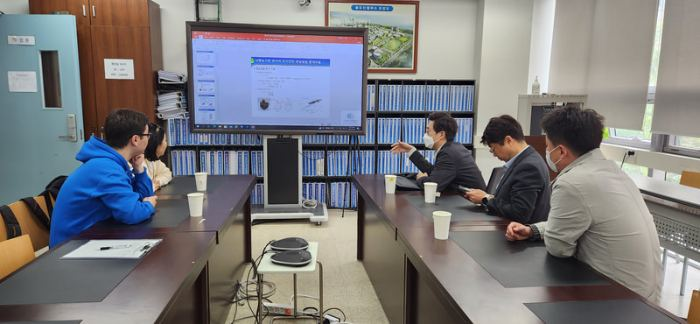
JOIN - 이영은 학생, 학부연구생으로 참여
Youngeun Lee(이영은) joins as an undergraduate researcher. Welcome!!
APPOINTMENT - 유일환 박사님, 전북대학교 지역건설공학과 조교수 임용
Dr. You(유일환 박사님) has been appointed as an Assistant Professor in the Department of Rural Construction Engineering at Jeonbuk National University! Congratulations!!
SEMINAR - 제52회 미추홀포럼 개최
2022년 12월 28일(수) 인천대학교 도시과학대학 도시환경공학부 건설환경공학전공의 주최로 제52회 미추홀포럼 -도시건설기술의 스마트 기술 적용 및 활성화-가 비대면으로 개최되었습니다. 김진균 교수(경희대학교; 구조진동 디지털트윈 기술), 안다훈 교수(서울과학기술대학교; 스마트 센서 구현을 위한 자석기반 마찰대전 에너지 하베스터), 박정준 박사(한국철도기술연구원; 기존 시설물의 BIM기반 유지관리를 위한 기술 개발)께서 발제자로 참석해주셨으며, 이승정 교수가 최종 토론에 참석하였습니다.
미추홀 포럼: 인천대학교 도시과학연구원에서 매년 개최해 오고 있는 정기학술포럼
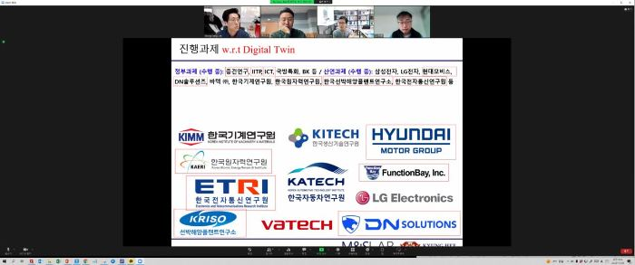
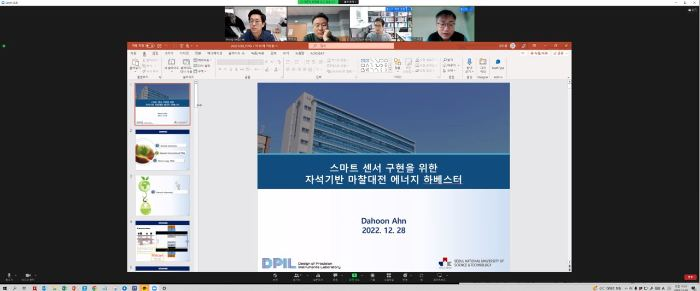
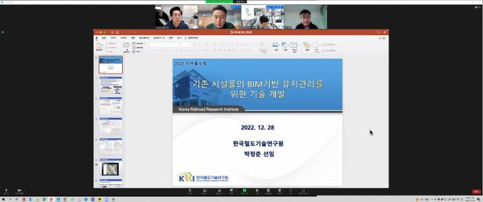
JOIN - 강윤종, 성지혜 학생, 학부연구생으로 참여
Yunjong Kang(강윤종) and Jihye Sung(성지혜) join as undergraduate researchers. Welcome!!
New lab for students is opened at Room 308 Building 9 (9호관 308호)
AWARD - 이승정 교수, 인천대학교 2021년도 학술연구상 수상
이승정 교수가 인천대학교에서 2021년도 학술연구상을 수상하였습니다.
AWARD - 이승정 교수, 한국방재학회 학회장 표창 수상
2022년 2월 16일 ~ 17일 연세대학교에서 개최된 2022 한국방재학회 학술발표대회에서 이승정 교수가 학회장 표창을 수상하였습니다.
SEMINAR - 제43회 미추홀포럼 개최
2022년 2월 4일(금) 인천대학교 도시과학대학 도시환경공학부 건설환경공학전공의 주최로 제43회 미추홀포럼 -스마트도시 건설 및 유지관리 기술-이 개최되었습니다. 박정준 박사(한국철도기술연구원; 철도인프라 분야 BIM 체계 도입 및 현황), 유일환 박사(고려대학교; 탄소기반 물질 활용에 의한 건설 소재의 패러다임 변화), 김병규 박사(한국철도기술연구원; 해저터널 자동화 그라우팅 및 진동 그라우팅 공법)께서 발제자로 참석해주셨으며, 유민택 박사(한국철도기술연구원)와 이승정 교수가 최종 토론에 참석하였습니다.
미추홀 포럼: 인천대학교 도시과학연구원에서 매년 개최해 오고 있는 정기학술포럼
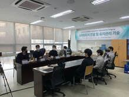
PRESS RELEASE - INU Research Archive
The research related "Net Zero Energy Structures" with Kyung Hee University is introduced in INU Research Archive.
CONSULTING - 인천대학교 가족회사 '대윤계기산업(주)' 애로기술 컨설팅 시작
이승정 교수가 인천대학교 산학협력단 가족회사 애로기술 컨설팅위원으로 매칭되어 2021년 12월까지 대윤계기산업(주)의 '믹싱된 생콘크리트의 수분량 측정장치 개발' 관련 컨설팅을 진행합니다. 9월 6일에는 대윤계기산업(주)의 서인호 대표님이 인천대를 방문하셔서 첫 번째 컨설팅을 가졌습니다.
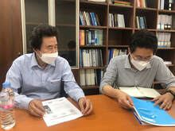
Getting started
Smart Material and Structure Lab. is getting started in Incheon National University.